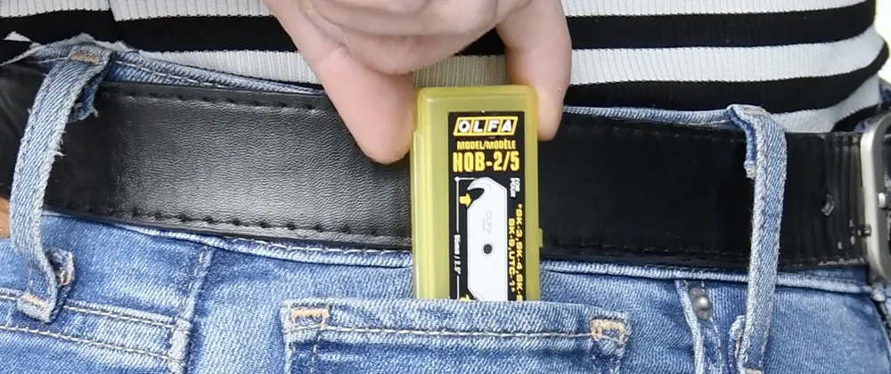

Línea OLFA
Repuestos y hojas OLFA
Hojas de repuesto para cada cuchillo: universales de 9 y 18 mm, extra fuertes de 25 mm, rotativas y especiales.

¿Qué hoja usa mi cuchillo?
Escribe el código de tu cuchillo (por ejemplo SK-5, A-1 o L-5) y te mostramos las hojas de repuesto compatibles. También funciona al revés: escribe el código de una hoja y ves en qué cuchillos sirve.
Guía de hojas: para qué sirve cada una
| Hoja | Características | Para qué materiales |
|---|---|---|
| LB-10 | 18 mm · 8 segmentos | Cartulina, cartón, hojas de papel, goma eva |
| LBB-10 | 18 mm · 8 segmentos · Excel Black, 25 % más de filo | Cartulina, cartón, hojas de papel, goma eva |
| LBD-10 | 18 mm · 15 segmentos, para cortes más precisos | Paneles de yeso, alfombra, pisos |
| LWB-3B | 18 mm · no fragmentable · filo dentado para no moler el material | Vinilo, tuberías, fibra de vidrio, lana, cuerda |
| LFB-5B | 18 mm · carbono recubierto con flúor, reduce la fricción | Cartón piedra, cartulina, goma eva |
| LSOL-10 | 18 mm · no fragmentable · trabajo forzado y duro | Papel, plástico, caucho, goma eva |
| AB-10 | 9 mm · 12 segmentos, para cortes más precisos | Papel, plástico, caucho, goma eva |
| SAB10 | 9 mm · 6 segmentos | Diseño gráfico, industrial y arquitectura |
| ASBB-10 | 9 mm · 12 segmentos · Excel Black, 25 % más de filo | Papel, plástico, caucho, goma eva |
| ASB-10S | 9 mm · 12 segmentos · acero inoxidable | Trabajos con materiales húmedos |
| AB-SOL-50 | 9 mm · no fragmentable · trabajo forzado y duro | Papel, plástico, caucho, goma eva, lana, plumavit |
| HB-5B | 25 mm · 6 segmentos · trabajo forzado y duro | Plástico, caucho, cartón piedra |
| HBB-5B | 25 mm · 6 segmentos · Excel Black, 25 % más de filo | Plástico, caucho, cartón piedra |
| HSWB-1/1B | 25 mm · no fragmentable · trabajo forzado y duro | Madera, tuberías |
Para quién
Compras recurrentes de empresas: cada cuchillo indica qué hojas usa y cada hoja, para qué cuchillos sirve.
Dónde se usa
- Reposición periódica para equipos de trabajo
- Hojas negras, de acero inoxidable, dentadas y no fragmentables
- Packs desde 5 hasta 50 unidades
56 productos


Cotiza esta línea
Cuéntanos qué cortas y cuántas unidades necesitas. Los precios se informan por cotización.